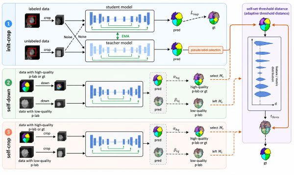
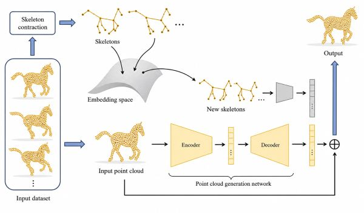

I am currently an associate professor at the State Key Laboratory of Virtual Reality Technology and Systems, Beihang University. Prior to this, I served as a senior research manager at SenseTime Research, where I led an R&D team in developing AI-powered medical products. I received my Ph.D. in 2018 from Beihang University under the joint supervision of Prof. Aimin Hao (Beihang University) and Prof. Hong Qin (Stony Brook University). From 2019 to 2021, I pursued postdoctoral research at the iMoon: Intelligent Media and Cognition Lab, Tsinghua University, working with Prof. Yue Gao. My research focuses on computer graphics, computer vision, and artificial intelligence, aiming to develop computational methods that address fundamental challenges in healthcare and biomedicine.
We are looking for self-motivated students with strong CV/CG backgrounds and an interest in healthcare. Please send your CV to xiaqing[AT]buaa[DOT]edu[DOT]cn.
[2026-03-30] One paper on foveated ray tracing for virtual reality rendering was published in
IEEE TVCG.
[2025-05-20] Our work, ECGFM, a foundation model for ECG analysis, was published in
Information Fusion.
[2024-12-12] Our work, Slice2Mesh, on 3D cardiac surface reconstruction from sparse slices, was published in
IEEE TMI.
[2024-10-09] One paper on active learning for salient object detection was published in
IEEE TPAMI.
[2024-07-30] One paper on coronary segmentation and vectorization was published in
IEEE TMI.
[2023-11-30] One paper on genome-wide association study of left ventricle was published in
Nature Communications.
[2023-10-14] Our work, AVDNet, on topology-consistent coronary artery segmentation, was published in
MedIA.
[2022-06-29] One paper on contrastive learning for medical image segmentation was published in
IEEE TMI.
[2021-01-20] One paper on few-shot learning for whole-heart segmentation was published in
IEEE TMI.
[2018-12-11] I joined
SenseTime Research (Beijing) as a full-time research scientist specializing in computer vision.
Research
Our research integrates artificial intelligence and virtual reality, drawing on computer vision and geometric computing to model biological systems, analyze multimodal biomedical data, and understand complex anatomical structures and surgical environments. We aim to advance biomedical discovery, quantitative diagnosis, and intelligent intervention.
Virtual Cells & Computational Biology
We develop computational models that integrate multimodal data to characterize biological states across molecular and cellular scales and predict responses to genetic and pharmacological perturbations. By combining representation learning with mechanistic priors, our research aims to infer regulatory mechanisms, identify therapeutic targets, and facilitate drug discovery.
Multimodal Biological Modeling · Multiscale Representation Learning · Perturbation Response Prediction · Biological Mechanism Discovery · Therapeutic Design
Computational Pathology
We develop multimodal, multiscale methods that link tissue morphology with molecular profiles and clinical data. By characterizing disease-associated patterns across tissue and cellular scales, our research supports interpretable cancer diagnosis and prognostic assessment, as well as evidence-grounded pathology reporting.
Whole-Slide Image Analysis · Spatial Omics Integration · Computational Tissue Phenotyping · Biomarker Discovery · Cancer Diagnosis & Prognosis

Medical Image Analysis
We develop learning-based methods for segmenting, registering, and reconstructing anatomical structures across medical imaging modalities. Our work integrates data-efficient learning with geometric and topological constraints to produce anatomically consistent representations for quantitative phenotyping, disease assessment, longitudinal analysis, and patient-specific treatment planning.
Medical Image Segmentation · Multimodal Registration · Anatomical Reconstruction · Topology-Preserving Learning · Image-Based Phenotyping

3D Vision & Geometric Computing
We develop geometric representations and learning methods for reconstructing, analyzing, deforming, and generating 3D shapes and dynamic scenes. By integrating geometric priors with data-driven models, our research seeks to preserve structural fidelity and temporal coherence across shape modeling, motion capture, animation, and immersive simulation.
3D Reconstruction · Shape Analysis & Deformation · Generative 3D Modeling · Motion Capture & Animation · Virtual Reality & Simulation
Surgical Intelligence & Autonomous Intervention
We develop computational methods for perception, reconstruction, and reasoning in dynamic surgical scenes using visual and geometric data. By integrating virtual surgery, spatiotemporal modeling, and procedural understanding, we aim to advance interactive simulation, intraoperative decision support, and autonomous surgical systems.
Surgical Scene Understanding · 3D/4D Scene Reconstruction · Virtual Surgery · Intraoperative Decision-Making · Autonomous Surgery
For a complete and up-to-date publication list, please visit Google Scholar or DBLP.